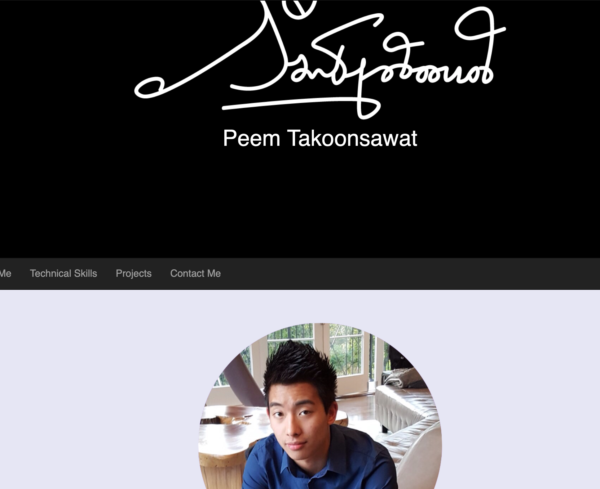

Portfolio 1

This is the portfolio I made created in COGS 187A, but I'll try not to be biased in my critique. Since it is my own portfolio, it is inline with what I want to present to a potential employer. The page is on the simpler side, and I would classify that this falls into the "not enough details" category; it doesn't reveal much about the person on the page. It doesn't look exactly professional since the page looks like it is done by an amateur. The skillset is revealed after scrollign down a the page a little bit and there is also a linked resume.
The design is flat and minimalistic. THe font selection is simple and nothing too complicated. The black and white color is simple and is not very distracting.
The design is flat and minimalistic. THe font selection is simple and nothing too complicated. The black and white color is simple and is not very distracting.